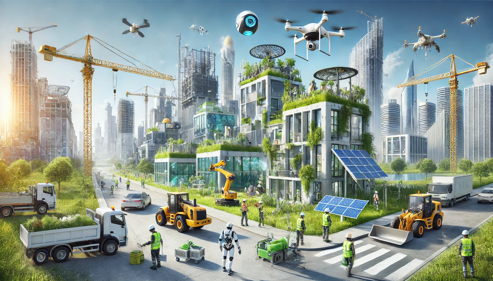

Welcome To My Story!

I began to learn coding at CodeNinjas, starting with block programming in Scratch and learning how algorithms work. After a while, I pursued learning how to program in Python at YoungWonks, learning the fundamentals and exploring a few additional avenues: game development via Pygame and hardware applications with Raspberry Pi.
Through the Computer Science curriculum at my high school, I began to work with Java. Although I struggled with it initially, I was able to master the basics and learn Object-Oriented Programming with help from YouTube. I developed some smaller projects in Python during this time as well, such as a GUI Clock using Tkinter and a Calculator, still exploring my interests.
During this time, I focused a lot on improving my Java skills, now preferring it over Python at times because of how comfortable I felt in the language (I still like both). I explored Mobile Application Development in this time, building applications of my own on Android Studio. Two of my favorite projects were a Cookie-Clicker inspired Minecraft Game and a Productivity Planner I built with a working scheduling platform and note taking capabilities.
Some of my most favorite years in my programming journey, I learned how to work with Data Structures in Java. I've explored Arrays, Linked Lists, Sets, and Trees, and what makes them interesting is how differently each one works from another and the use-cases they have in data storage and handling. 2026 was also the year I spent working on CS50, which has been a wonderful, highly productive experience as I have learned to code in C, SQL, and now HTML, CSS, and Javascript!